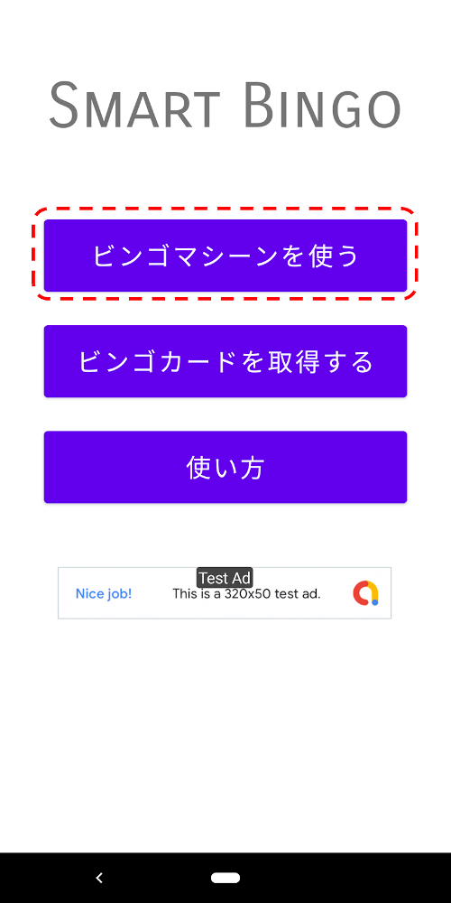
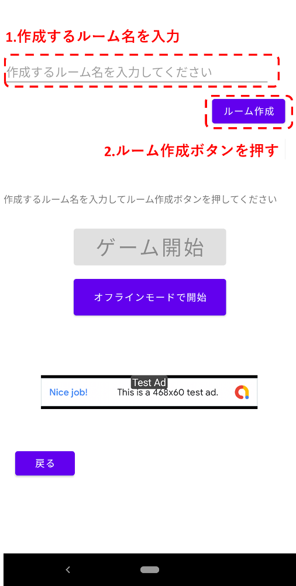
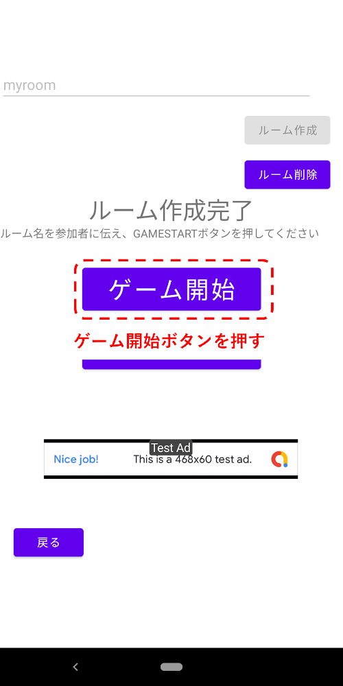
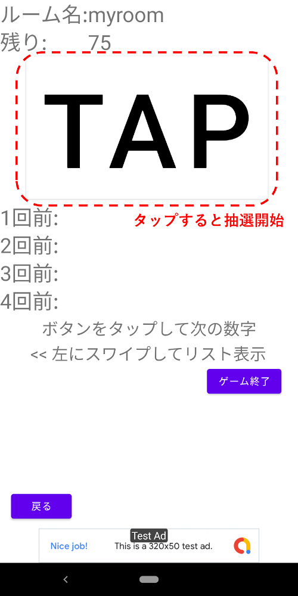
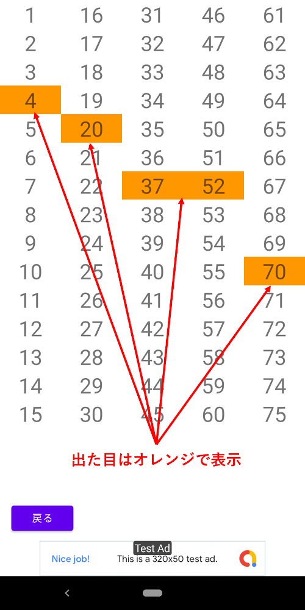
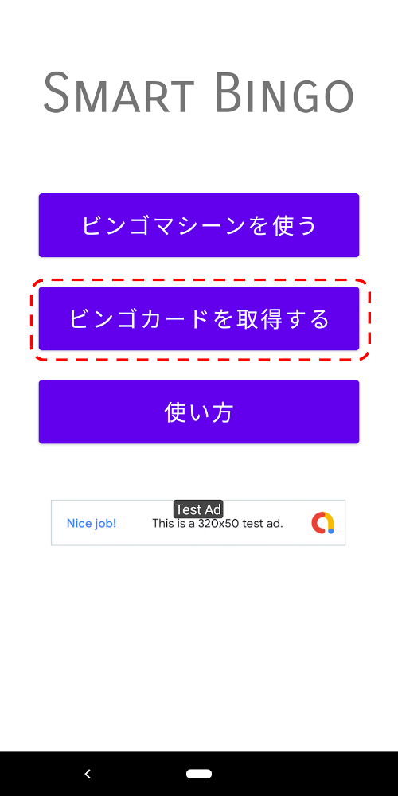
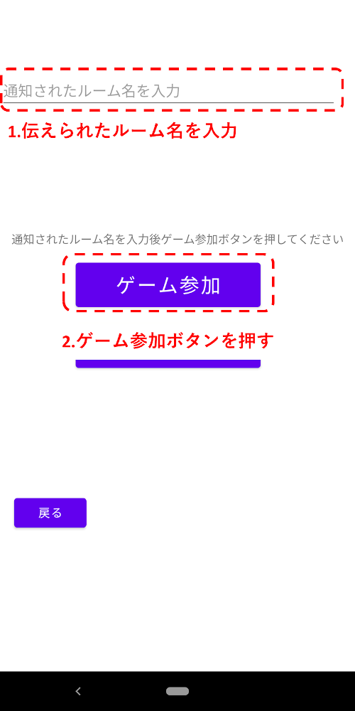

Smart Bingoをご利用いただきありがとうございます！Smart Bingoはビンゴマシーンとビンゴカードの機能を持つビンゴゲームアプリで、このアプリ１つでビンゴ大会を開くことができます。
また、このアプリでは出た目の情報をネットワーク経由で参加者に通知できるため、簡単かつ正確にゲームを進行することができます。
ビンゴ大会の主催者はビンゴマシーン機能を使用してください。この機能では目の抽選と確認及びこれまで出た目のリストを全自動で全参加者に送信できます。
①[ビンゴマシーンを使う]ボタンを押してください。
②任意のルーム名(※)を決め、テキストボックスに入力した後[ルーム作成]ボタンを押してください。
※ルーム…ビンゴ大会を開催する仮想的なゲーム会場のことです。主催者がルームを作成し、参加者がそこに参加することで出た目の情報を共有することができます。
([オフラインモードで開始]を押すとルーム作成を省略してゲームを開始します。オフラインモードの場合、目の抽選と確認は可能ですが、参加者に出た目の情報を送信することはできません。)
③ルーム作成に成功したらルーム名を参加者に伝え、[ゲーム開始]ボタンを押してください。
④[TAP]ボタンを押すと数字の抽選が始まります。再度ボタンを押すと目が確定します。
⑤左にスワイプするとこれまで出た目の一覧が表示されます。オレンジ色の数字がこれまでに出た目です
⑥ゲームを終了する場合は[ゲーム終了]ボタンを押してください。終了するとルームが削除され、出た目の履歴もクリアされるためご注意ください。
3.ビンゴ大会に参加するビンゴ大会の参加者はビンゴカード機能を使用してください。この機能ではビンゴカードの自動生成と、これまでに出た目のリストを表示することができます。なお、フェアプレイのため、カードは1ゲームで1回しか取得できません。
①[ビンゴカードを取得する]ボタンを押してください。
②主催者から伝えられたルーム名をテキストボックスに入力し、[ゲーム開始]ボタンを押してください。
※ルーム…ビンゴ大会を開催する仮想的なゲーム会場のことです。主催者がルームを作成し、参加者がそこに参加することで出た目の情報を共有することができます。
(他のアプリやビンゴマシーンで大会が行われている場合など、ルーム参加せずにビンゴカードを使いたい場合は[オフラインモードで開始]を押してください。)
③左にスワイプすると主催者がこれまでに出した目の一覧が表示されます。オレンジ色の数字がこれまでに出た目です。(※オフラインモードでは使用できません。)
④ゲームを終了する場合、[ゲーム終了]ボタンを押してください。終了後、再度同じルームに参加してカードを取得することはできないためご注意ください。
3.プライバシーポリシー